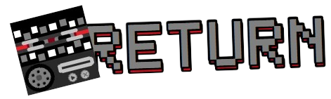
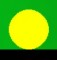
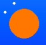
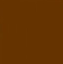
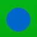
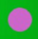
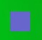
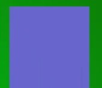

Buttons are first introduced in Level 8, and they can either help you, or get you in a difficult situation.



For this block, you have to find a coin to unlock it! But... be careful! If you die, you will have to get the coin again!
However, for an orange coin, the truth is different, you have a set time left after collecting the coin... because after that... the door will re-appear again... and you will get crushed...

When you touch the blue button, you jump higher, in fact even higher with the jump block!

When you touch the lavender button, your gravity becomes stronger! This can help when, for example, you may hit a block with a normal jump... but not with a stronger gravity...


This purple switch turns out (almost) all the lights! But it will help open purple blocks, who will block your way to victory!